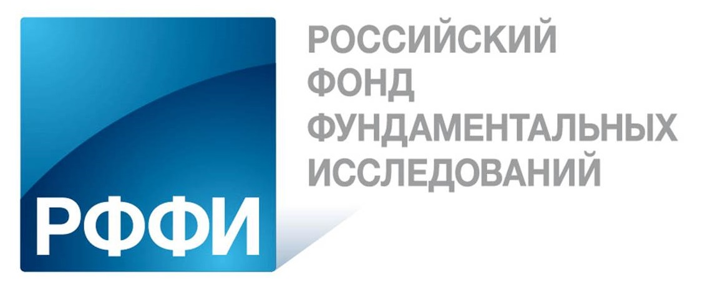
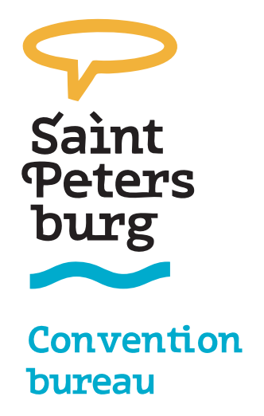

Организаторы
Главные организаторы конференции
Международный центр экологического менеджмента внутренних морей (Международный Центр EMECS);
Рабочая группа "Морские Берега" Совета по проблемам Мирового океана РАН.
Местные организаторы конференции
Российский государственный гидрометеорологический университет (РГГМУ) - головная организация;
Институт океанологии им. П.П. Ширшова Российской академии наук (ИО РАН);
Всероссийский научно-исследовательский геологический институт им. А.П. Карпинского (ВСЕГЕИ).
При финансовой поддержке Российского фонда фундаментальных исследований (РФФИ)
При поддержке Конгресс-бюро Санкт-Петербурга
Научные и информационные партнеры конференции
Технологическая платформа "Технологии экологического развития"
Исполнительный Комитет
Сузуки Мотоюки, президент Международного центра EMECS, Япония;
Идо Тошизо, председатель совета директоров Международного центра EMECS (губернатор префектуры Хего), Япония;
Жиндарев Леонид Алексеевич, руководитель рабочей группы “Морские берега” РАН, Россия;
Михеев Валерий Леонидович, и.о. ректора Российского государственного гидрометеорологического университета, Россия;
Ватанабе Масвата, председатель комитета по науке и политике Международного центра EMECS, Япония;
Нигматуллин Роберт Искандерович, директор Института океанологии им. П.П. Ширшова РАН, Москва, Россия;
Петров Олег Владимирович, генеральный директор Всероссийского научно-исследовательского геологического института им. А.П. Карпинского, Россия.
Программный комитет
Косьян Рубен Дереникович, заведующий лабораторией Южного отделения Института океанологии им. П.П. Ширшова РАН, Москва, Россия – председатель;
Ватанабе Масвата, профессор университета Чуо, председатель комитета по науке и политике Международного центра EMECS, Япония – сопредседатель;
Бровко Петр, профессор Дальневосточного федерального Университета, Россия;
Чэнь Чжунъюань, профессор восточно-китайского педагогического университета, лаборатория эстуарных и прибрежных исследований, Китай;
Жан-Поль Дюкротуа, почетный профессор института Устьевых и Прибрежных исследований, Университет Халла, Франция;
Гогоберидзе Георгий Гививич, директор департамента научных исследований и инноваций, Российский государственный гидрометеорологический университет, Россия;
Добролюбов Сергей Анатольевич, член-корреспондент РАН, заместитель председателя Экспертного совета РГО, декан географического факультета МГУ им. М.В. Ломоносова;
Игнатов Евгений Иванович, профессора МГУ им. М.В. Ломоносова, Россия;
Касимов Николай, академик РАН, Первый Вице-президент РГО, Председатель Технологической платформы "Технологии экологического развития"
Кудрявцев Владимир, профессор, исполнительный директор Лаборатории спутниковой океанографии, Российский государственный гидрометеорологический университет, Россия.
Леонтьев Игорь, ведущий научный сотрудник института океанологии им П.П. Ширшов РАН, Москва, Россия;
Лукьянова Светлана, ведущий научный сотрудник МГУ им. М.В. Ломоносова, Россия;
Менасвета Пиамсак, вице-президент Королевского Института, Таиланд;
Ожан Эрдал, президент Фонда MEDCOAST, Турция;
Рябчук Дарья Владимировна, заведующий отделом Региональной геоэкологии и морской геологии Всероссийского научно-исследовательского геологического института им. А.П. Карпинского, Россия;
Спиридонов Михаил Александрович, профессор, главный научный сотрудник Всероссийского научно-исследовательского геологического института им. А.П. Карпинского, Россия;
Трумбич Ивица, консультант ЮНЕСКО-МГП, Хорватия;
Волански Эрик, профессор университета Джеймса Кука, Австралия;
Янаги Тэцуо, почетный профессор университета Кюсю, главный научный сотрудник Международного центра EMECS, Япония
Местный организационный комитет
Косьян Рубен Дереникович, заведующий лабораторией Южного отделения Института океанологии им. П.П. Ширшова РАН, Москва, Россия – председатель;
Гогоберидзе Георгий Гививич, директор департамента научных исследований и инноваций, Российский государственный гидрометеорологический университет, Россия – сопредседатель;
Рябчук Дарья Владимировна, заведующий отделом Региональной геоэкологии и морской геологии Всероссийского научно-исследовательского геологического института им. А.П. Карпинского, Россия;
Ершова Александра Александровна, Российский государственный гидрометеорологический университет, Россия;
Леднова Юлия Анатольевна, Российский государственный гидрометеорологический университет, Россия;
Попов Николай Николаевич, Российский государственный гидрометеорологический университет, Россия;
Шатрова Ольга Васильевна, Российский государственный гидрометеорологический университет, Россия.
Комитет молодежной секции Партнерства студентов и школьников
Уэйн Белл, Старший cотрудник Вашингтонского колледжа, США – председатель;
Жан-Поль Дюкротуа, почетный профессор института Устьевых и Прибрежных исследований, Университет Халла, Франция;
Кавай Хироси, профессор университета Кобе, Япония;
Рябчук Дарья, заведующий отделом Региональной геоэкологии и морской геологии Всероссийского научно-исследовательского геологического института им. А.П. Карпинского, Россия;
Шатрова Ольга, Российский государственный гидрометеорологический университет, Россия.